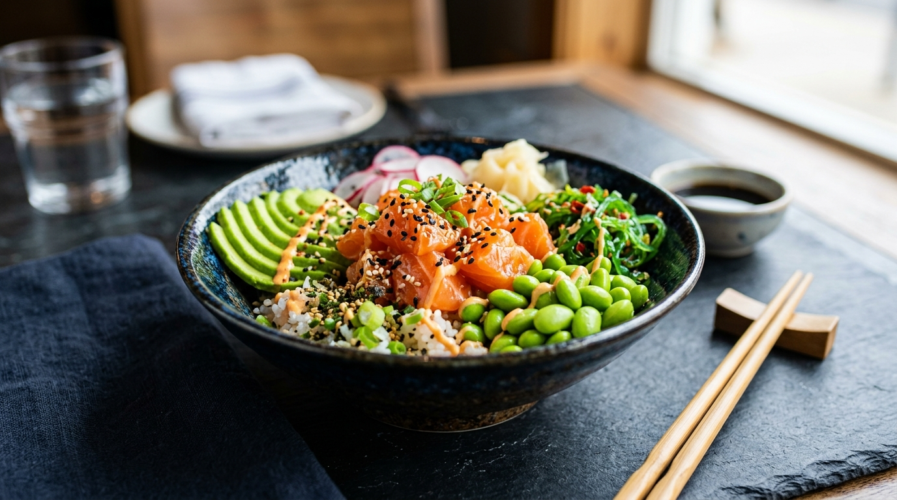

The Anatomy of a Perfect Poke Bowl: Balancing Flavors, Umami & Crunch
A master guide from Executive Chef Kai on how temperature contrast, sashimi cube geometry, cold-pressed sesame marinades, and fresh crunchy textures unite to create unforgettable Hawaiian poke harmony.